Media Facade
그르릉, 와르르, 우르릉
도시의 서사를 빛으로 기록하다
Place
아뜰리에 광화
Year
2025
Client
커스텀엑스, 미디어아트 서울
“Lightchaser는 공간 설계에서 구현까지 전 과정을 아우르며,
콘텐츠와
기술이 하나로 작동하는 미디어 파사드를 만듭니다.”
Technical Flow
01
Site Analysis &
Field Research
“공간의 조건과 맥락을 읽는 단계” : 현장 공간의 구조, 빛 환경, 동선 분석
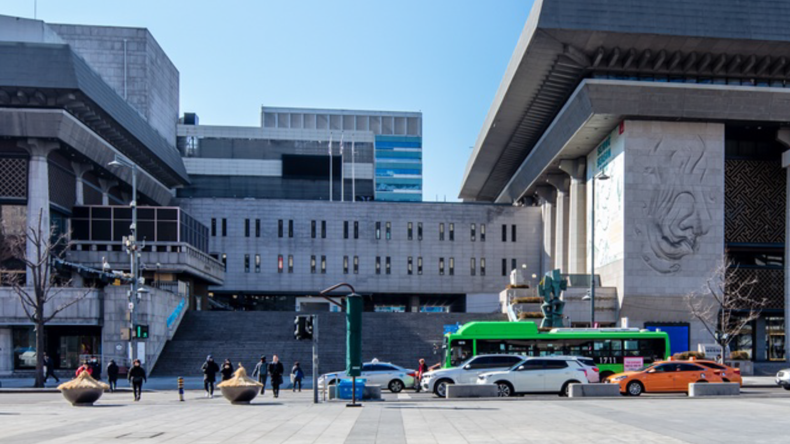
02
Spatial Design &
Technical Planning
“파사드 기술 구조를 설계하는 단계”
Hardware
50,000 ansi 프로젝터 4대 배치 계획
System
미디어 서버 및 전원·통신 설계
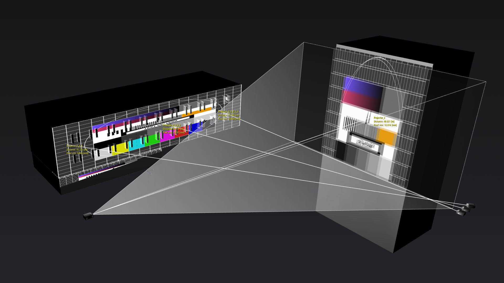
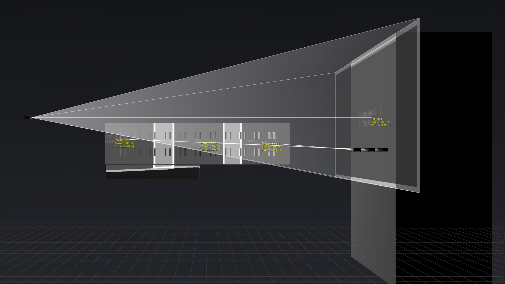
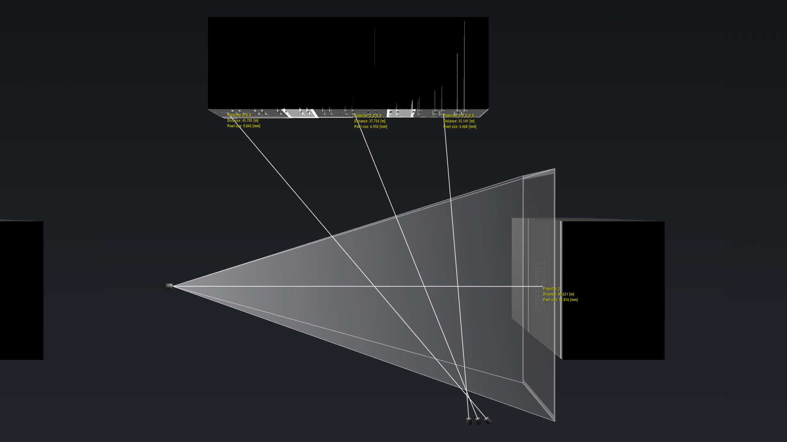
03
3D Scanning &
Mapping Guide
“공간을 도식화 하는 단계” : 3D 모델링 및 콘텐츠 가이드 설계
 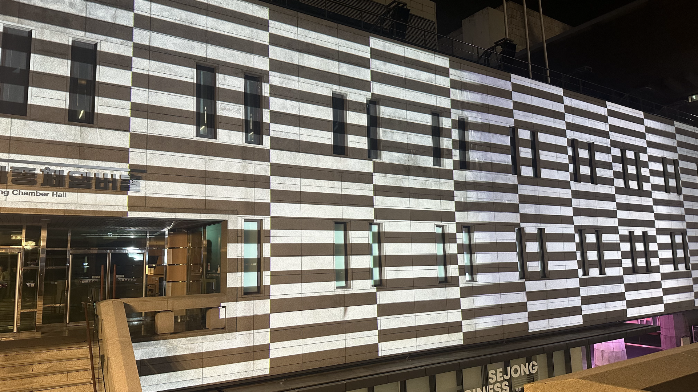
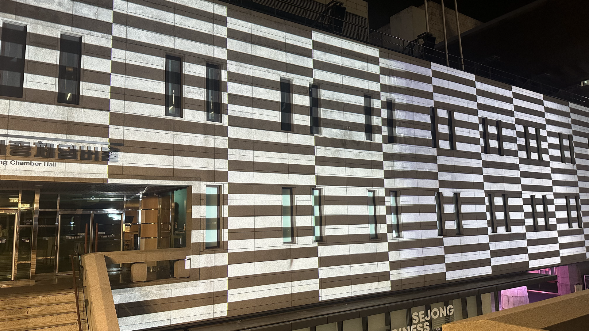


04
Projection Mapping &
Calibration
“공간에 맞춰 파사드를 완성하는 단계” : 정합 및 컨텐츠 현장 테스트
 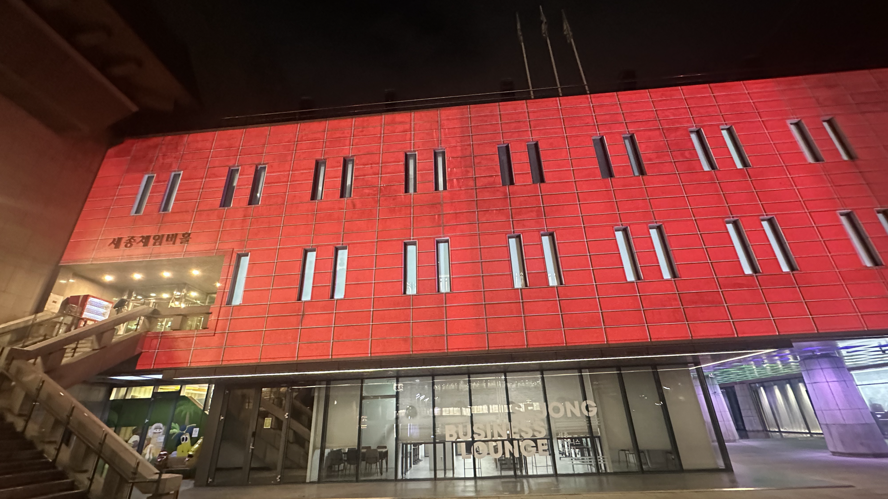
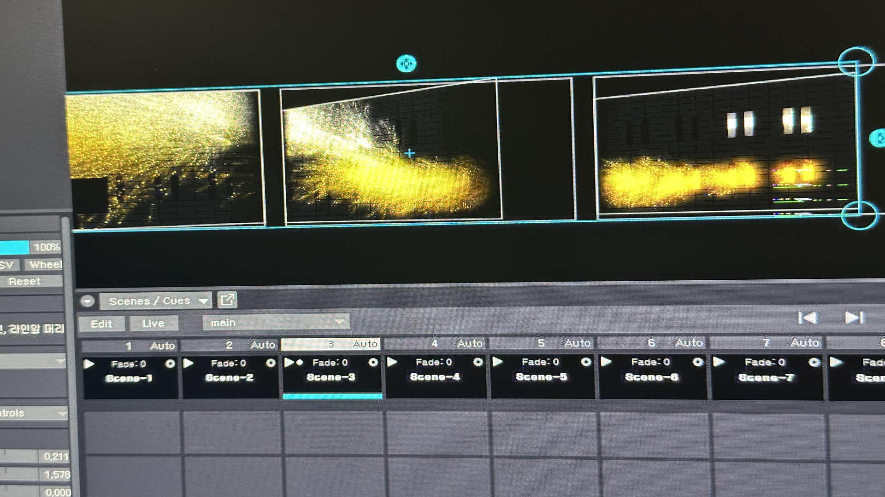
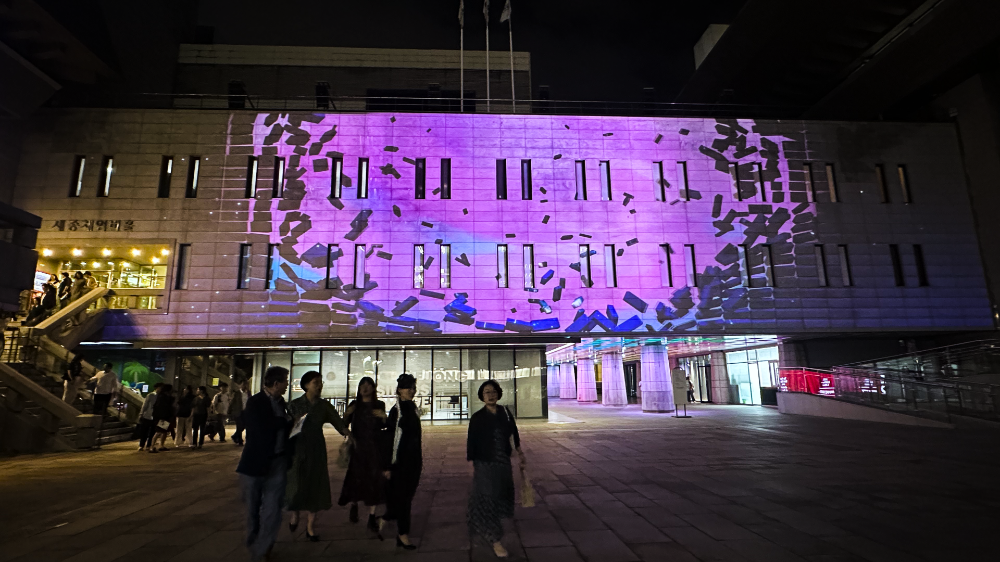
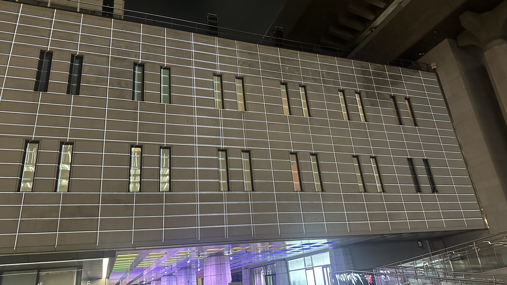
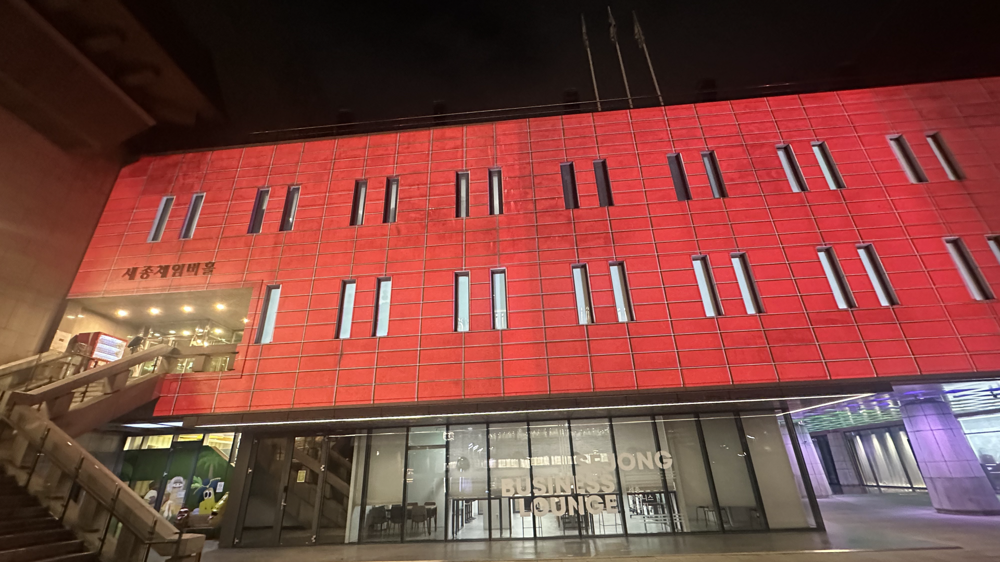
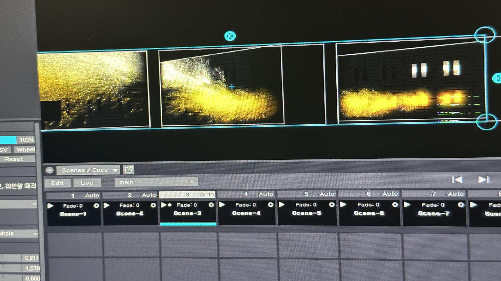
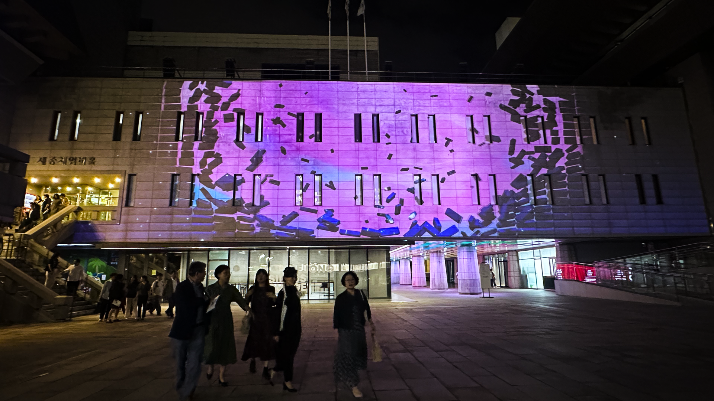
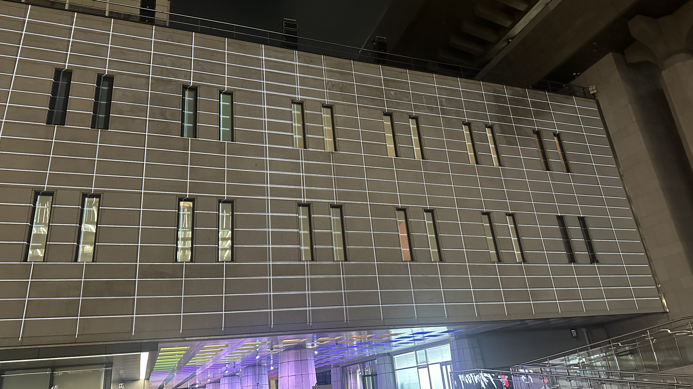
Creative Flow
최수인 작가의 세계관을 건축 구조 위에 재구성합니다.
01
Concept Planning &
Storyboard
공간 구조와 작품 이미지를 기반으로 한 스토리보드 설계

02
Source Development
이미지 및 그래픽 소스 제작, 환경에 맞춘 요소 정리

03
Motion & Sound
Production
공간의 구조를 활용한 콘텐츠 구현 및 사운드 제작

Final Output
현장 완성 영상
주최/주관
서울특별시, 서울디자인재단
참여작가
최수인(원화), 유환(미디어 아티스트)
제작
Lightchaser, 커스텀엑스
목록으로 돌아가기